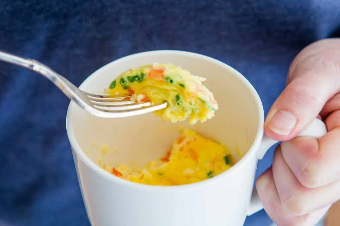

I choses this recipe because it is quick and it is a healthy easy snack to make afterschool. My family likes it becuase i can get a healthy snack without making a mess. -my mom "I love the inginuetity of making an ommelette in a mug"
| ingredients | amount | steps |
|---|---|---|
| large eggs | 2 | Lightly spray the inside of your microwave-safe mug with non-stick cooking spray. |
| milk | 1 tablespoon | Crack the eggs directly into the mug, pour in the milk or water, and beat thoroughly with a fork until well combined. |
| cheddar cheese | 2 tablespoons | Stir in all other ingredients |
| tomato | 1 tablespoon | Microwave on high for 30 seconds. Remove and give it a quick stir with your fork to break up any firm patches. |
| other vegetables | 1 tablespoon | Return to the microwave and cook for another 30 seconds. Stir gently once more to ensure everything cooks evenly. |
| salt and pepper or hot sauce | to taste | Microwave for a final 30 to 45 seconds until the omelette has set to your liking |